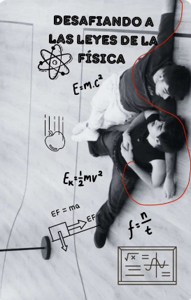

Fanfics de Wattpad



Desafiando a las leyes de la física
Martin ha sido siempre un chico tranquilo y tímido, apasionado de la danza y de los videojuegos. Cuando llega a Madrid para estudiar ingeniería naval, una carrera que no le entusiasma para nada, jamás se hubiera imaginado que acabaría liado en una fiesta con Juanjo, su futuro compañero de proyecto en La Feria de la Física, una pequeña competición sobre problemas y ejercicios de física llevada a cabo por diferentes universidades de Madrid.
Juanjo se enfrenta a su tercer año de carrera sin ninguna gana, pues sabe que lo que está haciendo no es lo que le apasiona realmente. Sin embargo, tras conocer a Martin de manera fortuita en una fiesta y verse obligado a pasar tiempo con él para poder ganar La Feria de la Física, Juanjo comienza a darse cuenta de que en la vida lo más importante es perseguir sus sueños y ser él mismo, aunque eso signifique afrontar sus propios miedos o defraudar a su entorno.
Martin y Juanjo no pueden ser más opuestos, y sin embargo una fuerza magnética les atrae el uno hacia el otro, como si fueran los polos opuestos de dos imanes. El problema es que Juanjo está aún dentro del armario, y que Martin tiene un exnovio que parece hacerle la vida imposible... Nada es fácil de controlar para ambos chicos, y mucho menos de quien se enamora cada uno. Porque en el amor lo mejor es dejar que todo fluya según las leyes de la física.
un amor en competencia
En la vibrante Zaragoza, Juanjo, estrella del Real Zaragoza, y Martin, un carismático cantante en ascenso, se encuentran en lados opuestos de la fama. Su rivalidad inicial se desvanece cuando una conexión inesperada florece entre ellos en medio de las presiones de sus respectivas carreras. A medida que luchan por encontrar un equilibrio entre la fama y la autenticidad, Juanjo y Martin descubren un amor que desafía las expectativas y los lleva a un viaje de autodescubrimiento y crecimiento.